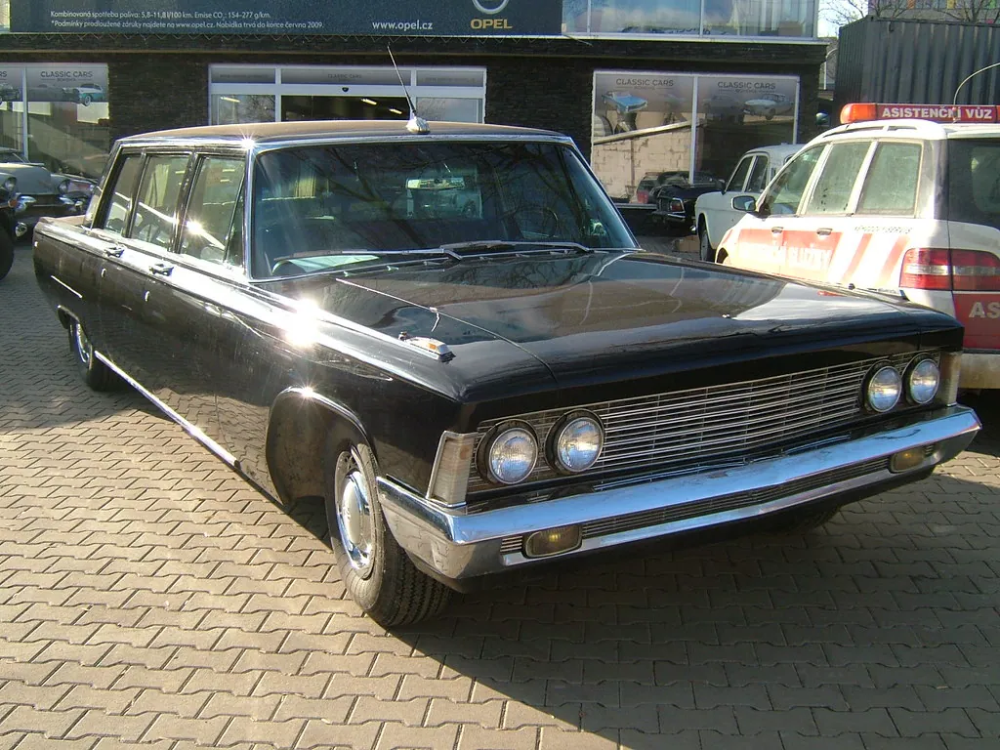

Engineering Milestones
The classic car is the sum of a century of invention. Here are the milestones that shaped it — the assembly line, the V8, the automatic transmission, the rise of safety, and the changing art of styling.

The Torque Ledger is an independent educational website and is not affiliated with, endorsed by, or sponsored by any company mentioned.
The Torque Ledger is an independent educational website and is not affiliated with, endorsed by, or sponsored by any company mentioned.
The moving assembly line
No single innovation did more to create the automobile age than the moving assembly line, perfected in the early 1900s. By bringing the work to the worker and breaking assembly into simple, repeated steps, it slashed the time and cost of building a car. A vehicle that had been a luxury for the few became affordable to ordinary families, and a nation took to the road. Every classic you admire is a descendant of that revolution in how things are made.
The mass-produced V8
The V8 engine — eight cylinders arranged in two banks forming a V — became a cornerstone of the American classic. Its appeal was simple: it packed a lot of smooth, strong power into a reasonably compact and affordable package. When a flathead V8 was brought within reach of ordinary buyers in the 1930s, it transformed what an everyday car could do, and the V8 went on to power generations of beloved classics. Its unmistakable burble remains one of the signature sounds of the hobby.
The automatic transmission
For the first decades of motoring, every driver had to master the clutch and the gearshift. The widespread arrival of the automatic transmission, especially through the 1950s, changed that forever. By shifting gears itself, it made driving dramatically easier and opened the road to many who had found the manual daunting. It was a comfort feature that reshaped who could drive, and it remains one of the most significant conveniences the car ever gained — a quiet revolution beneath the floor.
The rise of safety features
Early cars offered little protection in a crash, but the decades brought steady, life-saving progress. The seat belt moved from a rare option to a standard fitting through the 1960s, and the years that followed added padded dashboards, collapsible steering columns, stronger body structures with crumple zones, and impact-absorbing bumpers. Much of this progress is invisible, engineered into the structure of the car, but it means even a classic from the 1970s is a markedly safer machine than its ancestors. Appreciating this history is a reminder that every one of these cars was, in its day, as advanced as the engineers could make it.
Comfort and convenience
Alongside power and safety, the classic era brought a steady stream of comforts we now take for granted. Power steering tamed the heavy front ends of big cars; power brakes made them easier to stop; and air conditioning, once an exotic luxury, gradually spread through the ranges. Heaters, radios, and improved suspension all made the car a more pleasant place to spend time. Each of these advances tells a story of an industry competing to make motoring not just possible but genuinely comfortable, and each adds character to the classics that first wore them.
Styling through the eras
The look of the car evolved as dramatically as its engineering. The upright elegance of the 1930s gave way to the smooth, flowing bodies of the 1940s, then the chrome-laden exuberance and soaring tailfins of the 1950s, inspired by the jet and space ages. The 1960s brought crisper, leaner, more athletic lines, and the 1970s larger, boxier shapes with the big bumpers of new safety rules. These changing fashions are a history in metal, and learning to read them turns every old car into a dated, readable artifact of its moment.
The age of mass motoring
It is hard, from today, to grasp how completely the affordable automobile reshaped ordinary life. Before it, most people lived and died within a few miles of their birthplace, dependent on the horse, the train, and their own feet. The cheap, reliable car gave ordinary families a freedom that had belonged only to the wealthy: to live outside the city, to travel for pleasure, to visit distant relatives on a whim. Whole industries — motels, diners, roadside attractions, the great highways themselves — grew up to serve the newly mobile nation.
The classics we cherish were the vehicles of that transformation. Each one carried real families on real journeys, to work and church and the seaside and the drive-in. When you preserve a classic, you preserve a piece of that enormous social change, a tangible reminder of the decades when America learned to drive and the open road became a national dream. That is part of why these machines stir such deep feeling; they are woven into the story of how we came to live as we do.
Electrics and the electric starter
One early advance deserves special mention, because it changed who could drive at all: the electric starter. The earliest cars had to be started by hand, cranking a handle at the front — hard, and sometimes dangerous, work that could break an arm if the engine kicked back. The electric starter, which spread in the decades that followed, let a driver start the engine with the turn of a key. At a stroke, motoring was opened to anyone, regardless of strength, and the car became truly universal.
The electrical system grew from there, bringing electric lights that made night driving safe, then the radio, the heater, and eventually the many conveniences we expect today. On a classic, this system is simpler and more accessible than a modern car's, which is part of what makes these cars so rewarding to understand and maintain. The humble starter is a reminder that some of the most important advances are the ones we now never think about.
How the transmission evolved
The way a car sends its power to the wheels has its own rich history. The earliest cars demanded real skill to shift gears smoothly, with a crunch awaiting the clumsy. The synchromesh gearbox, which made shifting far easier and quieter, was a major advance. Then came the automatic transmission, which, as we have seen, removed the clutch and the gearshift from the driver's concern entirely and opened the road to many more people.
For the enthusiast, the choice between a manual and an automatic classic is a matter of taste and era. A manual offers engagement and control that many drivers love; an automatic offers ease and comfort, and was the mark of a well-appointed car in its day. Understanding how each works deepens the pleasure of driving a classic, and knowing which your car has shapes how you maintain and enjoy it.
The pickup and the station wagon
Not every classic is a sleek coupe or a finned cruiser. Two humbler body styles deserve their due, for they carried American life as much as any glamorous model. The pickup truck evolved from a bare work vehicle into something families used and loved, and today vintage trucks are among the most cherished and collectible classics of all, prized for their honest character and usefulness. The station wagon, with its long roof and cavernous back, was the family hauler of its age, carrying children, dogs, and camping gear on countless summer trips.
These workaday vehicles are woven into ordinary memory even more deeply than the dream cars, because so many families actually owned them. A restored classic pickup or wagon stirs powerful recollections of chores done, trips taken, and a simpler, sturdier way of life. They are proof that a classic need not be exotic to be beloved; sometimes the most moving car at a show is the plain old truck that looks just like Grandpa's.
Reading an old car advertisement
One of the most charming windows into automotive history is the period advertisement. The old car ads reveal what buyers of each era were promised and what they prized — power and glamour in one decade, economy and sensibility in another, safety and comfort in a third. They are a social history in themselves, full of optimism and the particular style of their time.
For the enthusiast and restorer, old advertisements and brochures are also genuinely useful, documenting a car's original colors, options, and specifications in the maker's own words. Collecting the literature for your particular car is a rewarding hobby within the hobby, and a fine way to understand how your classic was presented to the world when it was new. Many a correct restoration detail has been settled by a dusty old brochure found at a swap meet.
Why the history matters
Understanding where these cars came from deepens every part of the hobby. It helps you appreciate why a car was built the way it was, it guides a faithful restoration, and it makes you a better-informed owner and a more interesting companion at any show. The automobile is one of the defining inventions of the modern world, and to care for a classic is to be a custodian of that story. When you have soaked up the history, the Garage Trivia section puts your knowledge to the test, and the Maintenance section keeps the history running.